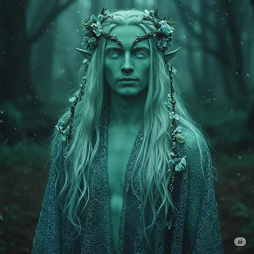

Аватар Героя 🖼
Високий і стрункий, шкіра має легке смарагдове сяйво, очі — як застиглі озера у місячному світлі. Волосся довге, сріблясто-зелене, зі вплетеними живими квітами. Носить мантію з павутинних ниток, що змінює відтінки залежно від часу доби.
Аурель прагне відновити баланс стихій і зупинити розростання темної енергії. Він бачить в Еларі останню надію на гармонію світу й готовий віддати свою силу, аби вберегти не лише землю, а й саму суть життя.
Аурель народився у глибинах лісу Лірваль, серед древніх гаїв, які давно втрачені на мапах. Його народ не покидає свого притулку століттями, але зловісний знак — згасання дерев і поява тіней у кронах — змусив Ауреля вирушити в Етельґард. Духи природи прошепотіли йому ім’я — Еларі.
Характеристики та Здібності ⚔️✨
Риси Характеру:
- Відданий союзникам
- Загадковий і мовчазний
- Ненавидить руйнівну магію
Ключові Здібності:
- Коріння землі: створює захисні або стримувальні пастки з рослин
- Зцілення росою: лікує союзників через стихійні елементи природи
- Духовне виявлення: бачить енергії життя й смерті в навколишньому світі
Мета в Етельґарді 🎯
Аурель прагне відновити баланс стихій і зупинити розростання темної енергії. Він бачить в Еларі останню надію на гармонію світу й готовий віддати свою силу, аби вберегти не лише землю, а й саму суть життя.